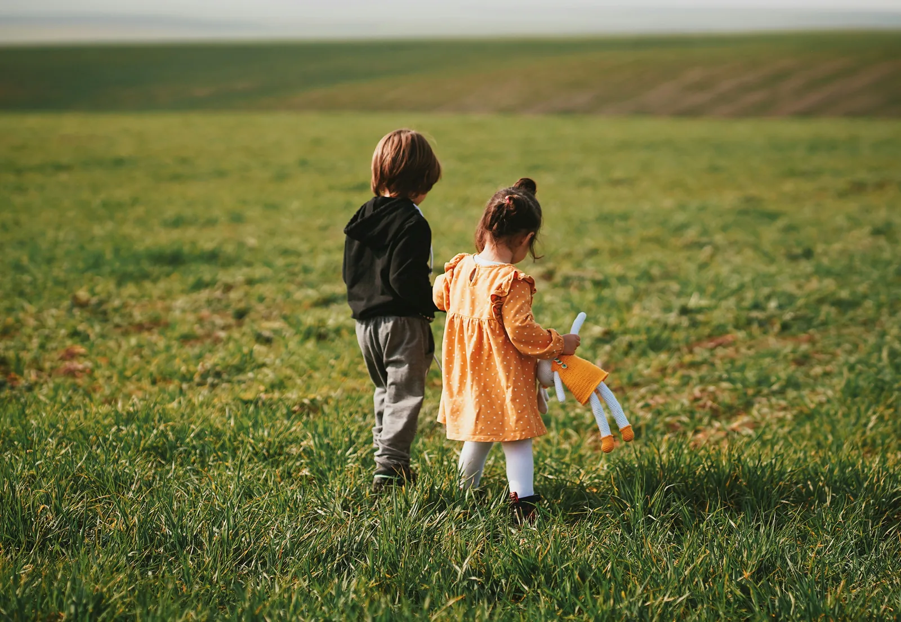
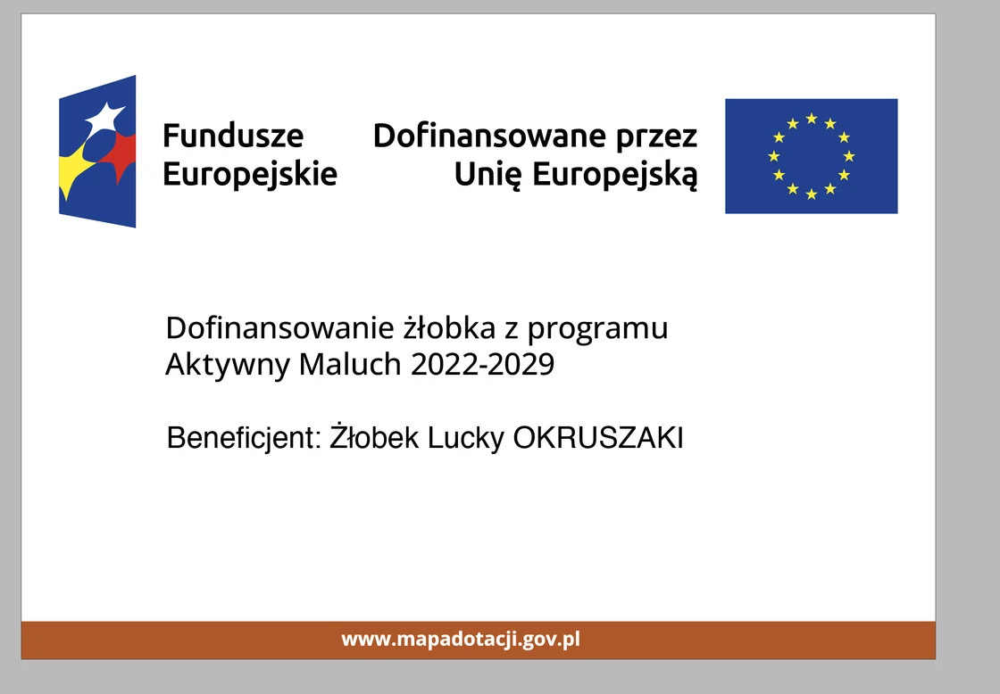

Żłobek w Rybarzowicach, gdzie rośniemy razem
Lucky OKRUSZAKI to żłobek dla dzieci do lat 3 przy ul. Beskidzkiej 348. Czynny od 6.30 do 16.30, dofinansowany z programu Aktywny Maluch.
Okruszki, które razem tworzą drzewo
Nasz znak to Drzewek, bohater żłobka. Jego korona jest zbudowana z kółek, takich samych jak okruszki rozsypane wokół napisu. Każdy okruszek jest inny, a razem tworzą jedno drzewo. Tak widzimy grupę maluchów, które spędzają z nami dzień.
Żłobek prowadzi Izabella Rusin-Zając, która od lat zajmuje się opieką nad najmłodszymi w żłobku Okruszek w Bielsku-Białej. W Rybarzowicach, u stóp Beskidów, przyjmujemy dzieci do lat 3, zgodnie z ustawą o opiece nad dziećmi w wieku do lat 3.
Dzień w żłobku
Stały rytm dnia daje maluchom poczucie bezpieczeństwa. Posiłki, zabawa, spacer i odpoczynek zawsze o podobnej porze.
- 6.30 - 8.45Przyprowadzanie dzieci, zabawy dowolne w kącikach zainteresowań
- 9.00 - 9.20Śniadanie
- 9.30 - 10.45Zajęcia dydaktyczno-wychowawcze, spacery, zabawy ruchowe na świeżym powietrzu / w sali, zabawy zorganizowane
- 11.20 - 13.00Odpoczynek, leżakowanie, słuchanie muzyki relaksacyjnej / bajek
- 13.15 - 13.40Drugie danie
- 15.00 - 15.20Podwieczorek
Opłaty i dofinansowanie
Żłobek otrzymał dofinansowanie z programu Aktywny Maluch 2022-2029, finansowanego z Funduszy Europejskich.
- Czesne1 900 złmiesięcznie, bez ulg
- Aktywny Maluch- 837 złdofinansowanie miesięcznie
- Aktywnie w żłobkudo 1 500 złświadczenie z ZUS miesięcznie
Wpisowe 200 zł jednorazowo, wyżywienie 12 zł dziennie.

Jak zapisać dziecko
- Pobierz i wypełnij kartę zgłoszenia dziecka do żłobka.
- Prześlij skan na biuro@luckyokruszaki.com albo przynieś kartę do żłobka.
- Odezwiemy się, żeby umówić się na poznanie żłobka i ustalić termin przyjęcia.
Kontakt i dojazd
Rybarzowice leżą między Bielskiem-Białą a Szczyrkiem. Zadzwoń albo napisz, chętnie odpowiemy na pytania o wolne miejsca.
- Adresul. Beskidzka 348, 43-378 Rybarzowice
- Telefon721 107 674
- E-mailbiuro@luckyokruszaki.com
- Godziny otwarcia6.30 - 16.30